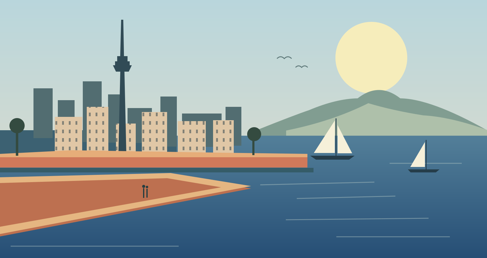

An independent Auckland journal36°50′ S 174°45′ E
A city.
A state of mind.
Somewhere between the harbour
and a very good bad idea.

POSTCARD NO. 001Tāmaki Makaurau, in a good light.
01 / A little perspectiveOriginal illustration · Aucklandia
A love letter to a city
that occasionally leaves you on read.
The beautiful bits. The weird bits. The things you notice when you put your phone down. And the things worth picking it up for.
Words from the neighbourhood
Observations. Detours.Field notes.
Occasional strong opinions.
Auckland, at a different frame rate
The small screen. Big feelings.Moving pictures.
Made here. Seen a little differently. Independent films by Guy Fraser.
Not a destination. A disposition.Locally made.
Aucklandia, by Guy Fraser
Locally made.
Affectionately
off-centre.
Aucklandia, by Guy Fraser Aucklandia is an independent corner of the internet for writing and films about life in Tāmaki Makaurau.
Not a top-ten list. Not a tourism campaign. Just a place to pay attention to a city that rewards a second look.
Beautiful, frustrating, funny, full of possibility. You know. Home.
Meet the city in motionSee you out there.
Back to the good bit ↑